전파전자통신기사 (2004-05-23 기출문제)
1과목: 디지털전자회로
1. 이상적인 연산 증폭기의 특성(조건)으로 틀린 것은?
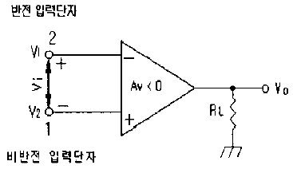
- 입력 임피던스 Ri = ∞
- 출력 임피던스 Ro = 0
- 전압이득 Av = -∞ (개방회로 전압이득)
- 온도에 의한 드리프트 현상이 있음.
(정답률: 알수없음)

2. 카운터(counter)를 이용하여 컨베어 벨트를 통과하는 생산품의 갯수를 파악하려고 한다. 최대 500개의 생산품을 카운트하기 위한 카운터를 플립-플롭(flip-flop)을 이용하여 제작할 때 최소한 몇개의 플립-플롭이 필요한가?
- 5
- 7
- 9
- 11
(정답률: 알수없음)
3. 그림과 같은 가산 증폭회로의 출력 전압 Vo는? (단, Rf=360㏀, R1=120㏀, R2=180㏀, R3=360㏀, V1=-6V, V2=4V, V3=2V임)
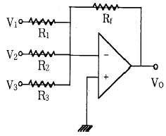
- 4[V]
- 8[V]
- 10[V]
- 12[V]
(정답률: 알수없음)
4. 다음 회로에서 트랜지스터의 콜렉터 이미터간 포화전압을0[V]라 할 때 ① A=B=C=0인 때와 ② A=B=C=5[V]일 때의 출력은?
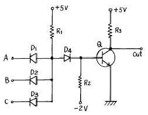
- ① 0[V], ② 0[V]
- ① 0[V], ② 5[V]
- ① 5[V], ② 0[V]
- ① 5[V], ② 5[V]
(정답률: 알수없음)
5. 다음 중 모든 디지털 시스템을 설계할 수 있는 범용게이트(universal gate)는?
- AND 게이트
- OR 게이트
- NOR 게이트
- Exclusive OR 게이트
(정답률: 알수없음)
6. 디지탈 변조(digital modulation)에서 그림과 같은 변조 방식은?
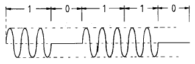
- ASK
- PCM
- PSK
- PNM
(정답률: 알수없음)
7. 그림의 캐패시터 입력형 정류회로의 특성을 설명한 것이다. 잘못된 것은?
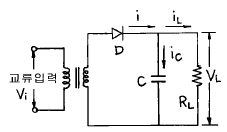
- 캐패시터의 정전용량 C가 클수록 다이오드 D에 전류가 흐르는 시간이 짧아진다.
- 캐패시터의 정전용량 C가 클수록 다이오드 D에 흐르는 전류가 감소한다.
- 캐패시터의 정전용량 C가 클수록 출력 전압의 맥동률은 적어진다.
- 다이오드에 흐르는 전류는 펄스(Pulse)파 형태이다.
(정답률: 알수없음)
8. 4변수들에 대한 카르노도(Karnaugh map)가 그림과 같이 주어졌을 경우 이를 부울식으로 표현하면?
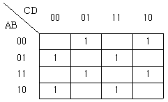
- A ⊕ B ⊕ C ⊕ D
- (A + B) ⊕ (C + D)
- (A ⊕ B) + (C ⊕ D)
- A B ⊕ C D
(정답률: 알수없음)
9. 트랜지스터 B급 증폭회로에서 실효부하저항이 RL'이고 전원전압이 Vcc이면 최대출력(Pomax)은?
- Vcc2/RL'
- Vcc/RL'
- Vcc2/2RL'
- Vcc/2RL'
(정답률: 알수없음)
10. 슈미트 트리거의 특징으로 옳지 않은 것은?
- 쌍안정 멀티 바이브레이터의 일종이다.
- 입력 전압의 크기가 회로의 포화, 차단 상태를 결정해 준다.
- 구형파와 삼각파 발생에 사용한다.
- 한쪽 트랜지스터의 콜렉터에서 다른쪽 트랜지스터의 베이스로만 결합용 캐퍼시터가 있다.
(정답률: 알수없음)
11. ECL(Emitter Coupled Logic)회로를 TTL회로와 비교 설명 한 것 중 맞는 것은?
- 에미터 폴로워이므로 안정된 동작을 한다.
- 스위칭 속도가 빠르다.
- 전력소모가 극히 적다.
- 회로가 간단하지만 공급전압이 높아야 한다.
(정답률: 알수없음)
12. 부울 대수식
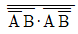
를 간단히 한 결과는? ·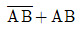
- 1
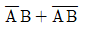
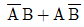
(정답률: 알수없음)
13. 대수증폭기의 동작은 무엇에 기인하는가?
- 연산증폭기의 비선형 동작
- pn 접합의 대수 특성
- pn 접합의 역방향 브레이크다운 특성
- RC 회로의 대수적인 충방전
(정답률: 알수없음)
14. 그림과 같은 위인 브릿지 발진회로의 발진주파수를 구하는 식은?
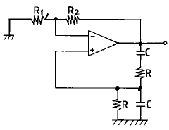
- 1/2πR1C
- 1/RC
- 1/2π RC
- 1/2π R2C
(정답률: 알수없음)
15. 트랜지스터에서 베이스폭변조(Base width modulation)에 관한 설명으로 가장 적합한 것은?
- 트랜지스터를 제조할 때 베이스 두께를 조정해주는 것을 말한다.
- 트랜지스터의 베이스에 변조전압을 걸어서 동작시키는 것을 말한다.
- 트랜지스터의 접합에 가해지는 바이어스에 의해 베이스 두께가 변하는 것을 이용한 변조를 말한다.
- 트랜지스터의 포장에 의해 베이스가 영향을 받는 것을 말한다.
(정답률: 알수없음)
16. 중심 주파수가 455[KHz]이고 대역폭이 8[KHz]가 되는 단동조 회로를 만들려고 한다. 이때 이 회로의 Q는 약 얼마가 되는가?
- 2.9
- 5.7
- 29
- 57
(정답률: 알수없음)
17. 출력 4[V]를 얻는데 궤환이 없을 때는 0.2[V]의 입력이 필요하고 부궤환이 있을 때는 2[V]의 입력이 필요하다고 한다. 궤환율 β 는 얼마인가?
- 0.25
- 0.30
- 0.40
- 0.45
(정답률: 알수없음)
18. 다음의 회로는 Ic를 안정하게 하기 위한 회로이다. 무슨 보상방법인가?
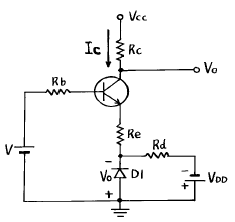
- 전류보상법
- 온도보상법
- 전압보상법
- 궤환보상법
(정답률: 알수없음)
19. 다음 그림의 논리회로와 등가인 회로는?
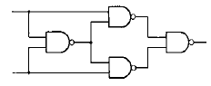
- Half adder
- Full adder
- Exclusive OR
- Exclusive NOR
(정답률: 알수없음)
20. 그림의 논리회로에서 입력 A=1(high), B=0 (low)일 때 출력 X와 Y의 값은?
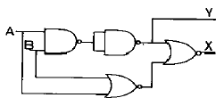
- X=1, Y=1
- X=1, Y=0
- X=0, Y=0
- X=0, Y=1
(정답률: 알수없음)
2과목: 무선통신기기
21. Micro파 통신의 특징을 설명한 것 중 틀린 것은?
- 안테나의 이득을 크게 할 수 있다.
- 안정한 전파전파 특성을 나타낸다.
- 광대역성이 가능하다.
- 외부의 잡음에 매우 약하다.
(정답률: 알수없음)
22. 납축 전지의 충전 화학반응은?
- PbSO4 + 2H2O + PbSO4 → PbO2 + Pb + 2H2SO4
- PbSO4 + Pb + 2H2SO4 → PbSO4 + 2H2O + PbSO4
- PbSO4 + Pb + PbSO4 → PbSO4 + 2H2O + 2H2SO4
- PbSO4 + 2H2O + PbSO4 → PbSO4 + Pb + 2PbSO4
(정답률: 알수없음)
23. 메캐니컬 필터(Mechanical filter)에 관한 설명이다. 설명이 적절하지 않은 것은?
- 주파수의 미세 조정이 비교적 어렵다.
- 금속편의 기계적인 공진현상을 이용한다.
- 사용 주파수대가 비교적 낮다.
- LPF의 기능을 한다.
(정답률: 알수없음)
24. 급전선의 종단 개방시 입력임피이던스를 Zf, 종단 단락시 입력 임피이던스를 Zs 라고하면, 이 급전선의 특성(파동) 임피이던스는?
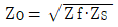
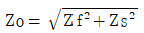
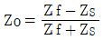
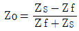
(정답률: 알수없음)
25. 무선 송신기에서 사용되는 완충 증폭기에 대한 설명이 맞지 않는 것은?
- 증폭방식은 주로 A급이다.
- 발진회로와 부하간을 격리하기 위하여 사용되는 증폭기다.
- 발진기의 안정도를 높이기 위하여 사용된다.
- 주파수 대역폭을 높이기 위하여 사용된다.
(정답률: 알수없음)
26. 다원접속방식 중 대역확산기술을 적용하기 때문에 잡음 및 에러에 강한 특징을 갖는 방식은?
- CDMA
- PA-TDMA
- FDMA
- TDMA
(정답률: 알수없음)
27. 진폭변조 송신기의 출력이 100(%)변조시에 100[W]이다. 50[%]변조시의 출력은 약 몇[W]인가?
- 66.7[W]
- 75[W]
- 100[W]
- 112.5[W]
(정답률: 알수없음)
28. 수신기의 종합특성중 희망신호 이외의 신호를 어느정도 분리할 수 있느냐의 분리능력을 나타내는 것은?
- 감도 (Sensitivity)
- 선택도 (Selectivity)
- 충실도 (Fidelity)
- 안정도 (Stability)
(정답률: 알수없음)
29. 아래 그림은 이동전화용 단말기의 일반적 구조이다. 빈칸 A 에 알맞는 기능은?
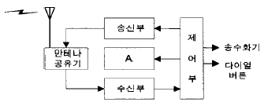
- 변,복조기(Mod/Demodulation)
- 주파수 합성기(Synthesizer)
- 전원부(Power Supply)
- IF 증폭기(IF Amplifier)
(정답률: 알수없음)
30. 레이다의 수신부의 구성과 관계 없는 것은?
- 클라이스트론(건다이오드)
- 음극선관(CRT)
- 마그네트론
- 중간주파증폭기
(정답률: 알수없음)
31. 레이다에서 발사된 펄스 전파가 20[㎲]후에 목표물에 반사되어 되돌아 왔다. 목표물까지의 거리는 얼마인가?
- 1.5[㎞]
- 3[㎞]
- 4.5[㎞]
- 6[㎞]
(정답률: 알수없음)
32. 이동통신 시스템에서 캐리어주파수가 850MHz, 차량속도가 80km/h라 할때 최대 Doppler Spread는 얼마인가?
- 63Hz
- 65Hz
- 67Hz
- 69Hz
(정답률: 알수없음)
33. FM 수신기에서 스켈치 회로가 사용되는 이유는?
- 수신기 감도를 향상시키기 위해서
- 선택도를 높이기 위해서
- 자동 주파수를 조정하기 위해서
- 수신 신호가 없을 때 내부 잡음을 억제하기 위해서
(정답률: 알수없음)
34. 단상 반파 정류기에서 출력 전력은?
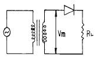
- 입력 전압의 자승에 비례
- 부하 임피던스의 자승에 비례
- 다이오드 내부저항의 자승에 비례
- 입력 전압의 자승에 반비례
(정답률: 알수없음)
35. 그림과 같은 이상형 CR발진기에서 C=0.⑤[㎌], R=1[㏀]일때 발진주파수는 얼마인가?
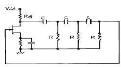
- 약 130[㎐]
- 약 318.5[㎐]
- 약 1300[㎐]
- 약 3185[㎐]
(정답률: 알수없음)
36. FM변조 방식중 간접 FM변조 방식이 아닌 것은?
- 이상법에 의한 변조 방법
- 벡터 합성법에 의한 변조방법
- 반사형 크라이스트론을 이용한 변조방법
- 펄스 위치변조를 이용한 변조방법
(정답률: 알수없음)
37. FM 송신기의 반송파와 최대주파수 편이를 측정하였더니 각각 80MHz 와 50KHz 이었다. 이 송신기에 10KHz 의 신호파로 변조한다면 점유 주파수 대역폭(B)과 변조지수(mf)는 얼마인가?
- B=110[KHz], mf =5
- B=110[KHz], mf =6
- B=120[KHz], mf =5
- B=120[KHz], mf =6
(정답률: 알수없음)
38. 점유주파수 대역폭을 바르게 설명한 것은?
- 송신기에서 방출되는 전체 에너지의 99[%]를 차지하는 대역폭
- 송신기에서 방출되는 전체 에너지의 100[%]를 차지하는 대역폭
- 송신기에서 방출되는 전체 에너지의 0.5[%]를 차지하는 대역폭
- 송신기에서 방출되는 전체 에너지의 50[%]를 차지하는 대역폭
(정답률: 알수없음)
39. 이득 대역적(Gain Bandwidth Product)이 갖는 의미로서 가장 적절한 것은?
- 증폭기의 증폭 성능을 나타내며 어느정도 넓은 대역에 걸쳐 안정된 증폭을 수행하는가를 의미
- 증폭기의 증폭성능을 나타내며 다음 단과 어느 정도 양호한 증폭이 이루어지는가를 의미
- 발진기의 발진 성능을 나타내며 어느정도 넓은 대역에 걸쳐 안정된 발진이 가능한가를 의미
- 발진기의 발진 성능을 나타내며 어느정도 양호한 증폭특성으로 발진을 수행하는가를 의미
(정답률: 알수없음)
40. 스펙트럼 분석기(spectrum analyzer)의 용도로서 맞지 않는 것은?
- 펄스폭 및 반복율 측정
- 변조의 직선성 측정
- FM 편차 측정
- RF 간섭시험
(정답률: 알수없음)
3과목: 안테나공학
41. 델린저(Dellinger)현상의 특징이 아닌 것은?
- 야간에만 나타난다.
- 태양면의 폭발에 기인한다.
- 단파통신에 주로 영향을 준다.
- 주파수를 높게 선정하여 극복한다.
(정답률: 알수없음)
42. 안테나의 지향성을 나타내는 식은? (여기서 Pav : 평균 복사전력 밀도, Pmax : 최대 복사전력 밀도, Wr : 총 복사전력)
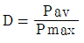
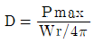
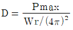
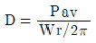
(정답률: 알수없음)
43. 개구면 안테나에 해당되지 않는 것은?
- 렌즈 안테나
- 곡면 반사경 안테나
- 슬롯(slot) 안테나
- 유전체봉 안테나
(정답률: 알수없음)
44. 초단파가 가시거리를 넘어서 이례적으로 멀리 전파하는 일이 있는데 그 원인이 아닌 것은?
- 초굴절 또는 라디오 닥트에 의한 전파
- 대류권 산란에 의한 전파
- 산악회절파에 의한 전파
- F 층의 반사에 의한 전파
(정답률: 알수없음)
45. λ /4수직 접지 안테나의 상대 이득은 같은 전력의 반파장 안테나의 상대이득에 비하여 몇배가 되는가?
- 2배
- 1/2배
- √2배
- 1/√2배
(정답률: 알수없음)
46. 다음의 동조급전 방식에 대한 설명 중 옳은 것은?
- 송신기와 안테나 사이의 거리가 멀수록 많이 사용한다.
- 전압급전일 때 직렬공진의 급전회로를 사용하려면 급전선의 길이를 λ/4의 기수배로 사용한다.
- 전류급전일 때 병렬공진의 급전회로를 사용하려면 급전선의 길이를 λ/4의 우수배로 사용한다.
- 임피던스 정합회로를 사용하므로 진행파가 급전된다.
(정답률: 알수없음)
47. 주파수 10[MHz]에 대한 전기적 미소다이폴의 복사전계가 그 정전계보다 이론상 커지는 것은 송신 안테나에서 대략 얼마만큼 떨어진 곳에서 부터인가?
- 5[m]
- 10[m]
- 15[m]
- 30[m]
(정답률: 알수없음)
48. 5[MHz]용 λ/4의 수직접지안테나에 입력전압의 최대값이 12[V]이었다면, 급전점으로 부터 5[m]인 지점에서의 전압은 얼마인가?
- 6[V]
- 10[V]
- 12[V]
- 18[V]
(정답률: 알수없음)
49. VHF대에서 송수신 공중선의 높이가 다같이 1[m]라면 직접파에 의한 전파 가시거리는?
- 약7.14[㎞]
- 약8.22[㎞]
- 약10.15[㎞]
- 약12.4[㎞]
(정답률: 알수없음)
50. 장중파용 안테나의 특징 중 옳지 못한 것은?
- 설치가 저렴하고 광대역성이다.
- 안테나의 이득이 낮다.
- 고유파장의 안테나를 얻기 어렵다.
- 주로 수직편파에 의한 지표파를 이용하므로 접지가 필요하다.
(정답률: 알수없음)
51. 다음 중 집파다이폴(collector)을 여러 개 설치하여 전파를 모으고 그 기전력을 급전선에 결합시키는 원리를 사용한 단파대의 수신용 안테나는?
- 어골형 안테나
- 롬빅(rhombic) 안테나
- 고조파 안테나
- 벤트(bent) 안테나
(정답률: 알수없음)
52. 다음 중 초단파 통신의 특징이 아닌 것은? (단, 중파 통신과 비교)
- 라디오덕트에 의한 원거리 전파가 될 수 있다.
- 광대역 전송이 가능하다.
- 기생 진동의 발생이 적다.
- 가시거리 내에서 전파 손실이 크다.
(정답률: 알수없음)
53. 도파관창의 용도로서 맞지 않은 것은?
- 임피던스 정합용 소자로서 사용한다.
- 도파관용 필터로 사용한다.
- 공동공진기에서 출력을 얻는데 사용한다.
- 도파관의 여진용으로 사용한다.
(정답률: 알수없음)
54. 아래 안테나 중에서 직선 편파나 원형 편파가 가능하며 진행파 안테나로 되는 것은?
- 야기(Yagi) 안테나
- 나선(Helical) 안테나
- 루 - 프(Loop) 안테나
- 폴디드 다이폴(Folded dipole) 안테나
(정답률: 알수없음)
55. 특성 임피던스 300[Ω]인 무손실 선로가 있다. 75[Ω]의 부하를 접속하였을때 선로의 정재파비는 얼마인가?
- 1
- 2
- 3
- 4
(정답률: 알수없음)
56. 다음 중 차단파장이 가장 긴 모드는?
- TE01 모드
- TE11 모드
- TM11 모드
- TM01 모드
(정답률: 알수없음)
57. 다음은 지표파에 대한 설명이다. 잘못된 것은?
- 전파는 평지에서 가장 잘 전파한다.
- 유전율이 작을수록 감쇠가 적어진다.
- 수평편파는 큰 감쇠를 받는다.
- 장·중파대에서 감쇠가 적다.
(정답률: 알수없음)
58. 임피던스 정합회로를 쓰지 않고도 평행2선식 급전선과 직접 연결 가능한 안테나는?
- 반파장 안테나
- 폴디드 안테나
- 빔안테나
- 야기 안테나
(정답률: 알수없음)
59. 대수주기형 안테나(Log periodic antenna)에 대한 기술로 서 옳지 않는 것은?
- 안테나의 크기와 모양이 비례적으로 커지는 여러개의 안테나 소자로 되어 있다.
- 주파수의 대수값이 일정한 값만큼씩 달라지는 주파수 때마다 동일한 복사특성을 나타낸다.
- 무지향성의 안테나로 이득이 매우 높다.
- 매우 넓은 주파수 대역을 갖는다.
(정답률: 알수없음)
60. 루우프 안테나를 방향 탐지용으로 사용하려고 할때는 수직 안테나의 출력과 루우프 안테나의 출력을 합산한 것을 동시에 받아들이고 있는 이유로서 가장 타당한 것은?
- 측정 정밀도를 향상시키기 위한 것이다.
- 도래 방향과 수직 안테나에 의한 실효고를 높이기 위함이다.
- 루우프 안테나의 실효고는 수직부보다 길어야 하므로 이를 수직부와 비교하기 위함이다.
- 전파의 도래 방향 중 루우프 안테나만으로서는 전후 방향의 식별이 안되기 때문이다.
(정답률: 알수없음)
4과목: 통신영어 및 교통지리
61. Choose the best word to fill the blank in the following sentence.
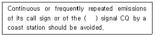
- enquiry
- superfluous
- unnecessary
- Q code
(정답률: 알수없음)
62. Choose the improper reply to the following request.
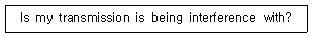
- Your transmission is being interference with nil.
- Your transmission is being interfere with severely.
- Your transmission is being interfere with moderately.
- Your transmission is being interfere with extremely.
(정답률: 알수없음)
63. Choose the wrong translation.
- OVER---이 통화는 끝나고 너의 응답이 필요 없다.
- ACKNOWLEDGE---나의 송신을 완전히 수신하였고 또한 이해하였는지 알려라.
- ROGER---나는 너의 최종의 송신을 완전히 수신하고 이해하였다.
- STAND BY---잠시 기다리라.
(정답률: 알수없음)
64. Choose the word has a similar meaning to the underlined word.
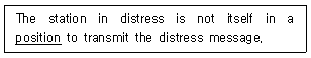
- attitude
- posture
- circumstances
- persons rank in relation to others
(정답률: 알수없음)
65. 세계적인 주요 항구인 Istanbul은 어느 나라에 있는가?
- IRAN
- IRAQ
- LEBANON
- TURKEY
(정답률: 알수없음)
66. Incheon - Shimizu 간의 최단거리 항로상에 위치해 있는 주요항구들이다. 틀린 것은?
- Otaru
- Yawata
- Wakayama
- Yokkaichi
(정답률: 알수없음)
67. THE GREAT LAKES 의 각 개별 명칭이 아닌 것은?
- MICHIGAN
- HURON
- ONTARIO
- ST. LAWRENCE
(정답률: 알수없음)
68. MEDITERRANEAN SEA 해역에 위치해 있는 주요 해안국이 아닌 것은?
- ALGER RADIO
- MALTA RADIO
- LAVAN RADIO
- CYPRUS RADIO
(정답률: 알수없음)
69. What's the meaning of abbreviation QRS?
- Send fasters.
- Send more slowly.
- Stop sending.
- I am ready for automatic operation.
(정답률: 알수없음)
70. What's meaning of the following sentence?
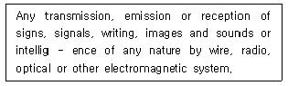
- radiocommunication
- telecommunication
- telegraphy
- telephoney
(정답률: 알수없음)
71. 본문 내용과 관련이 없는 것은?
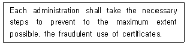
- Holder's signature
- Authentication of issuing administration
- Master's confirmation
- Fingerprints
(정답률: 알수없음)
72. Which is the improper translation of the following telegram message into English.
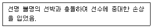
- Our ship collided a ship the name of which is unknown and has received serious damage to the stem.
- We have collided with an unknown ship, being seriously damaged to the bow.
- Collided with unknown vessel and received serious damage to bow.
- Having collided with an unknown vessel, our ship has been seriously damaged to the head.
(정답률: 알수없음)
73. Choose the correct one which belong to the following definition.
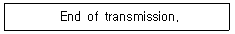
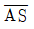
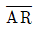
- BK
- BN
(정답률: 알수없음)
74. Select the one which provides the best version to the underlined part.
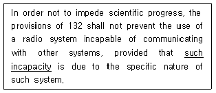
- 다른 방식과 통신을 할 수 없는 무선방식
- 다른 방식과 통신이 금지되어 있는 무선방식
- 상호무선통신을 행할 수 없는 모든 무선방식
- 과학적진보를 방해하지 않는 무선방식
(정답률: 알수없음)
75. 다음중 국명과 수도(Capital city) 관계가 틀린 것은?
- New Zealand는 Wellington
- Chile는 Santiago
- Turkey는 Ankara
- Morocco(Kingdom of)는 Casablanca
(정답률: 알수없음)
76. Choose the wrong meaning of the following terminology
- Mooring buoys : 계류부표
- Hydrographic surverying operations: 수로 측량작업
- Dredging operations : 하역작업
- Salvage operations : 인양작업
(정답률: 알수없음)
77. 표지부호 CY로서 운용하는 우리나라의 무선표지국은?
- 죽도
- 장기
- 주문진
- 영도
(정답률: 알수없음)
78. Fill in the blank with suitable one.
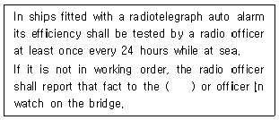
- chief officer
- director
- commander
- master
(정답률: 알수없음)
79. What is the phonetic word for the letter "C" in the appendix to the Radio Regulations?
- Canada
- Chicago
- Charlie
- Chamber
(정답률: 알수없음)
80. INMARSAT를 이용하기 위해 선박에 설치한 국의 명칭은?
- 선상통신국
- 선박국
- 선박지구국
- 지구국
(정답률: 알수없음)
5과목: 전파관계법규
81. 다음 송신설비 중 공중선 전력을 규격전력으로 표시하지 않는 것은?
- 비상위치지시용 무선표지설비
- 라디오 부이의 송신설비
- 아마추어국의 송신설비
- 실험국의 송신설비
(정답률: 알수없음)
82. 전파법에 규정된 송신설비란?
- 무선통신의 송신을 위한 설비와 그 부가장치
- 송신장치와 송신 공중선계로서 구성되고 전파를 보내는 설비
- 송신장치와 이에 부가하는 장치
- 송신장치에서 발생하는 고주파 에너지를 공간에 복사하는 설비
(정답률: 알수없음)
83. 비밀 보안자료를 입수하는 목적으로 가장 적합한 것은?
- 방향탐지를 유리하게 하기 위하여
- 방해통신을 유리하게 하기 위하여
- 통신운영에 지장을 주기 위하여
- 통신내용의 분석를 유리하게 하기 위하여
(정답률: 알수없음)
84. 다음중 세계 해상 조난 및 안전제도에서의 긴급 및 안전 통신에 포함되지 않는 것은?
- 선박의 보고통신
- 현장통신
- 수색 및 구조작업 지원통신
- 항행 및 기상경보 및 긴급정보
(정답률: 알수없음)
85. 다음 사항 중 무선국 개설허가의 신청시 심사항목에 해당되지 않는 것은?
- 주파수지정이 가능한지의 여부
- 설치·운용할 무선설비가 규정에 의한 기술기준에 적합한 지의 여부
- 무선종사자의 배치계획이 규정에 의한 자격·정원배치 기준에 적합한 지의 여부
- 무선국을 운용할 재정적인 기초가 있는지의 여부
(정답률: 알수없음)
86. 전파에 관한 특별규정과 다르게 설명된 것은?
- 회원국은 전파방해가 일어나지 않도록 서로 협력하여야 한다.
- 조난통신은 절대적 우선순위로 하고 또한 이에 필요한 조치를 취할 의무가 있다.
- 회원국은 자국의 군용무선설비에 대하여 모든 규칙의 규정을 준수하도록 한다.
- 허위 또는 기만의 조난, 긴급, 안전신호 및 식별신호의 전송 또는 유포를 방지하며, 이의 감시에 협력하여야 한다.
(정답률: 알수없음)
87. 다음 중 무선국 개설허가의 유효기간이 1년인 것은?
- 실험국
- 선상통신국
- 간이무선국
- 이동중계국
(정답률: 알수없음)
88. DSC용으로 사용되는 주파수대가 아닌 것은?
- MF대
- HF대
- VHF대
- UHF대
(정답률: 알수없음)
89. ITU의 조직 및 기능에 관한 설명 중 잘못된 것은?
- 전권위원회의는 회원국의 대표단으로 구성되며 매 4년마다 개최한다.
- 이사회는 전권위원회의에서 선출된 회원국으로 구성된다.
- 전파규칙은 전파관리위원회(RRB)에서 개정한다.
- 사무총장은 연합활동의 행정적 및 재정적 사항 전반에 관하여 이사회에 대하여 칙임을 진다.
(정답률: 알수없음)
90. 무선통신업무에 종사하는 자가 통신보안에 관한 사항을 준수하지 아니한 경우의 벌칙은?
- 100만원 이하의 과태료
- 200만원 이하의 과태료
- 300만원 이하의 과태료
- 1년 이하의 징역 또는 500만원 이하의 벌금
(정답률: 알수없음)
91. 무선국의 허가증 기재사항으로 맞지 않는 것은?
- 무선설비의 명칭
- 허가의 유효기간
- 공중선전력
- 무선국의 목적
(정답률: 알수없음)
92. 다음 중 무선국 개설허가의 기본적인 결격사유에 해당하지 않는 것은?
- 외국의 법인 또는 단체
- 형법중 내란의 죄 위반의 혐의로 구속중인 자
- 전파법에 규정한 죄를 범하여 금고이상의 형의 집행유예 선고를 받고 그 집행유예기간중에 있는 자
- 전파법에 규정한 죄를 범하여 금고이상의 실형의 선고를 받고 그 집행이 종료된 날부터 2년을 경과하지 아니한 자
(정답률: 알수없음)
93. 무선국 허가의 유효기간이 3년인 무선국의 재허가 신청기간은?
- 유효기간 만료전 2월까지
- 유효기간 만료전 2월 이상 4월 이내
- 유효기간 만료전 3월 이상 6월 이내
- 유효기간 만료전 6월 이상 1년 이내
(정답률: 알수없음)
94. 단파통신의 보안상 취약점은?
- 주파수 범위가 협소하여 혼신이 많다.
- 원거리에서 안전하게 도청할 수 있다.
- 전자기술의 고도화로 수신기 제작이 용이하다.
- 통신 상대방을 확인할 수 없다.
(정답률: 알수없음)
95. 다음 중 잘못 설명된 것은?
- 비밀은 어떠한 경우라도 전화에 의한 평문수발이 금지된다.
- 비밀을 휴대하여 여행하는 자는 국내 경찰기관에 위탁 보관할 수 있다.
- 각급기관의 장은 비밀의 보관을 위하여 필요한 인원을 보관책임자로 임명하여야 한다.
- 암호 및 음어자재라도 경우에 따라서는 복제 또는 복사할 수 있다.
(정답률: 알수없음)
96. 정보통신부장관은 전파자원에 대한 국가적 수요를 원활히 충족할 수 있도록 전파이용 중·장기계획을 수립하여야 하는데, 다음중 중·장기계획에 포함되지 않는 것은?
- 전파자원에 관한 국제적 이용 계획의 변경
- 주파수 대역별 용도
- 중·장기 전파자원의 수요 전망
- 전파이용기술의 발전추세
(정답률: 알수없음)
97. 다음은 음향통신의 장점에 관한 설명이다. 틀린 것은?
- 주위에 신속히 의사를 전달할 수 있다.
- 기상의 영향으로 청각의 제한을 받는다.
- 통신수단에 이용되는 장비와 인원이 극소수다.
- 언제, 어디에서도 쉽게 이용할 수 있다.
(정답률: 알수없음)
98. 보안자재 및 비밀통신 제원에 관한 통신보안 위규사항과 관련이 없는 것은?
- 암호, 음어 및 약호의 누설 행위
- 비인가된 암호의 사용 행위
- 음어와 평문의 혼합사용 행위
- 북한 통신소와의 교신 행위
(정답률: 알수없음)
99. ITU 공용어간 해석상 문제 발생시 최우선하는 공용어는?
- 영어
- 스페인어
- 프랑스어
- 중국어
(정답률: 알수없음)
100. 국제전기통신연합의 기본 법률문서가 아닌 것은?
- 국제전기통신연합헌장
- 업무규칙
- 국제전기통신 협약
- 정보통신규칙
(정답률: 알수없음)